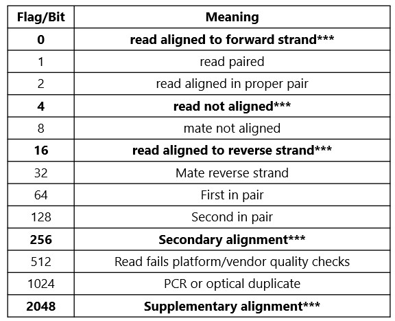

Fun with (alignment) flags⚓︎
Overview⚓︎
Filtering sequence read alignments based on their alignment flag (SAM/BAM column 3) is extremely useful for evaluating the mapping quality of read alignments and inferring strandedness. It is also possible to filter SAM/BAM files to retain only alignments with specific alignment flags.

*** flags relevant to nanopore DRS and derivatives
Nanopore considerations⚓︎
Nanopore datasets comprise single-end reads. A common step in processing nanopore datasets is to retain only primary alignments for downstream processing. This can be accomplished when converting between SAM to BAM e.g.
samtools view -F 2308 -o filtered.bam in.sam
The sum total of nanopore-related flags is 0+4+16+256+2048 = 2324. Subtracting 0+16 (primary alignments against forward and reverse strand) gives 2308. The -F flag acts to exclude all bits that can be used to make 2308 (e.g. 4+256+2048).
Filtering for reverse strand alignments only can thus be accomplished with -f 16 (primary only) or -f 2320 (primary, secondary, and supplementary)
Filtering for primary forward strand alignments only requires -F 2324
Illumina considerations⚓︎
Illumina datasets may be unpaired (single-end, one read per fragment) or paired-end (two reads per fragment). For unpaired reads, the rules outlined above for nanopore remain valid. For paired-end reads, alignment flag operations are a little more complex.
Examples: - a correctly paired primary alignment with R1 aligning to the forward strand would have a value of 0+1+2+32+64 = 99 - a correctly paired primary alignment with R2 aligning to the forward strand would have a value of 0+1+2+32+128 = 163 - an incorrectly paired primary alignment with R2 aligning to the reverse strand could have a value of 1+16+128 = 145 (implies mate is aligned to same strand)